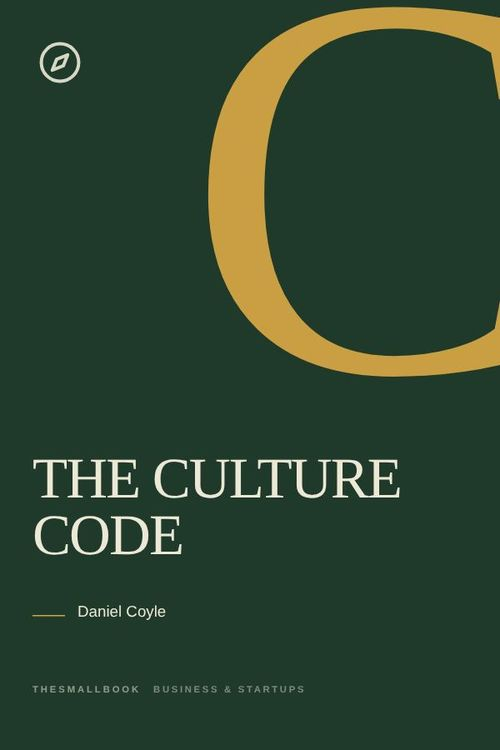

Library › Ask the Library › How do I build a great team?
How do I build a great team?
The short answer
Hire for character and train for skill. Build psychological safety first, and the talent follows, culture is the strategy.
The books behind the answer
Good to Great
Jim Collins · 2001 · 8 min · 6 lessons
Good is the enemy of great. The leap comes from humble fanatic leaders, the right people first, brutal facts, and one big hedgehog idea.
- First Who, Then What: Get the right people on the bus before deciding where it's going. Who beats what.

The Culture Code
Daniel Coyle · 2018 · 8 min · 6 lessons
Great cultures aren't built on talent or perks. They run on three signals: you're safe here, we share weakness, and this is where we're going.
- Safety First: The Spaghetti Tower Lesson: The best teams are the safest teams. Vulnerability from the top creates trust everywhere.

Who Not How
Dan Sullivan & Dr. Benjamin Hardy · 2020 · 8 min · 6 lessons
Every 'How do I do this?' has a better question hiding inside: 'WHO can do this for me?' Freedom lives in that swap.
- The How Trap: Your Default Question Is a Cage: Stop asking 'how do I do this?', ask 'WHO can do this?' and delegate with trust.

Leaders Eat Last
Simon Sinek · 2014 · 8 min · 6 lessons
In the Marines, officers eat after their men - and the men would die for them. Leadership is not rank; it's choosing to protect the people in your care.
- The Circle of Safety: When people feel protected, they take risks for the tribe. Safety is a performance multiplier.
A failure that proves it
Why did HP + Autonomy fail?
2012 · BUSINESS · Loss: $8.8B writedown - 79% of the price
HP paid $11 billion for Autonomy without due diligence, and wrote off $8.8 billion. Vet the team before you buy the story.
The louder you need a deal to be true, the less you should trust your judgment of it. When your best-informed skeptic says stop, that's not friction - that's the data.
Questions people ask next
Can I read this in Hindi?
Yes. This answer is written in simple English. Open any linked book and choose Hindi or Hinglish to read the full lessons in your language, with audio where available.